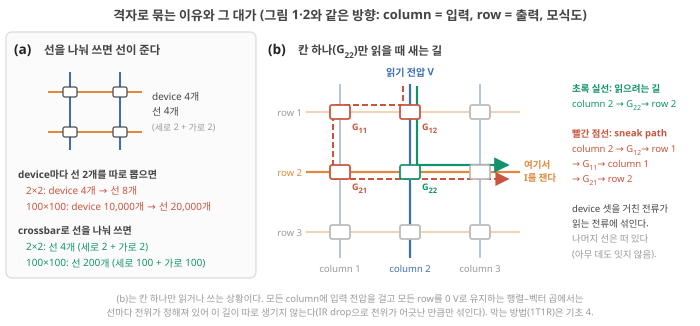

Day 7. crossbar로 행렬–벡터 곱하기
Phase 1 · 왜 뉴로모픽 컴퓨팅인가
이번 질문 conductance 배열은 어떻게 곱셈과 덧셈을 한 번에 하고, 그 조건은 무엇인가?
왜 배우나 crossbar 행렬–벡터 곱이 성립할 I–V 조건을 내 소재가 통과하는지 판단한다.
오늘의 장면 입력 숫자 → column voltage(DAC) → I = G × V, row에서 합 → TIA·ADC로 읽기 → 출력 숫자
오늘 반드시 device는 곱셈(I = G × V), 선은 덧셈을 한다. 읽기는 settling time(예: 5τ) 안에 끝나고, I–V가 직선이 아니면 곱셈이 틀어진다.
나중에 봐도 됨 IR drop·sneak path 계산 · ADC 내부(SAR) · 1T1R·CMOS
넘어가는 기준 '오늘 반드시'를 내 말로 말할 수 있으면 충분합니다.
이후 쓰이는 곳 Day 10 readout = 행렬–벡터 곱 · Day 49–50 array·sneak path
지난 학습 복습
지난 학습 단위(Day 6 · 뇌의 원리는 어떤 비용을 줄이나)의 핵심을 다른 예로 확인합니다. 고르는 즉시 맞았는지와 이유가 보입니다. 틀려도 아래 학습자료는 그대로 열려 있고, 틀린 문제에는 다시 볼 곳이 붙습니다.
사전 테스트 (선택)
사전 테스트 펼치기 · 배우기 전에 짐작해 보는 문제 (선택)
학습자료
Day 3–4에서 신경망 한 층의 계산이 2×2 예제의 "곱해서 더하기"(행렬–벡터 곱)라는 것을, Day 5–6에서 뇌의 원리가 어느 비용을 어떤 조건에서 줄이는지를 봤습니다. 오늘은 한 단계 내려가서 하드웨어가 그 계산을 실제로 어떻게 하는지를 봅니다. "Ohm과 Kirchhoff가 곱셈과 덧셈을 해 준다"는 문장은 맞지만, 그 문장이 성립하려면 device와 회로가 갖춰야 할 조건이 길게 붙습니다. 그 조건 목록이 곧 "시냅스 device·뉴런 device에 요구되는 spec"이고, 내가 만드는 이온 device가 어느 spec을 만족하고 어느 spec을 못 만족하는지 적을 수 있게 되는 것이 오늘의 목표입니다. 1–2구간은 Day 3–4의 2×2 예제 하나를 끝까지 씁니다. 오늘 답할 질문은 아래 여섯 가지이고, 학습 구간 1–6이 이 순서대로 하나씩 답합니다.
이 주제의 질문 순서 — 이번 Day 7에서는 구간 1–2만 읽습니다. 나머지는 Day 8에서 이어집니다(구간 번호는 원래 한 묶음이던 순서 그대로입니다).
- Day 3–4의 2×2 예제를 전선과 device로: conductance, Ohm, Kirchhoff (그리고 신경망 한 층이 왜 그 계산인가) → 구간 1
- 숫자는 어떤 길을 지나 전압·전류가 되었다가 다시 숫자가 되나? 그 계산은 얼마나 걸리고, 어떤 조건에서 성립하나? (DAC·TIA·ADC 기초 포함) → 구간 2
- Day 5–6의 LIF 규칙(integrate, leak, fire & reset)은 어떤 회로(capacitor, resistor, threshold switch)이고, spiking neural network 한 층은 어떻게 동작하나? (Day 8에서)
- synapse device spec (1): read와 write, number of states, read linearity와 update linearity·symmetry (Day 8에서)
- synapse device spec (2): retention, endurance, variation. inference-only, on-chip training, reservoir computing node의 차이 (Day 8에서)
- peripheral circuits는 왜 비싸고, device 하나의 fJ는 system에서 무엇이 되나? (Day 8에서)
학습 구간 1. Day 3–4의 2×2 예제를 전선으로: conductance, Ohm, Kirchhoff
Day 3–4의 2×2 예제(입력 (2, 1) → 출력 (5, 4.5))를 다시 떠올리고, 같은 계산을 교차점 device의 conductance·column 전압·row 전류로 숫자 그대로 따라가며, 곱셈은 Ohm 법칙(Ohm's law)이, 덧셈은 Kirchhoff 전류 법칙(Kirchhoff's current law, KCL)이 한다는 것을 말할 수 있게 된다.
기초 1: Day 3–4의 2×2 예제 다시 보기 — 원소, 입력 벡터, weight 행렬
오늘은 Day 3 3구간의 예제를 그대로 씁니다. 이름과 숫자를 한 번 더 맞춰 둡니다.
- 입력 벡터(input vector) \(\mathbf{u} = (u_1, u_2) = (2, 1)\): 한 번에 함께 들어오는 입력 숫자 2개의 목록, 곧 샘플 하나. 목록이나 표 안의 숫자 하나(예: \(u_1 = 2\))를 원소(element)라 합니다.
- weight: 입력 숫자 하나와 출력 숫자 하나를 잇는 선마다 붙은 숫자. 입력 2개와 출력 2개가 모두 이어지면(완전연결) 선이 4개라 weight도 4개입니다.
- weight 행렬(weight matrix) \(W\): 그 네 숫자를 표로 놓은 것. 행 = 출력, 열 = 입력입니다.
\[ W = \begin{pmatrix} 1 & 3 \\ 2 & 0.5 \end{pmatrix} \]
- 출력 벡터(output vector) \(\mathbf{y}\): 행 하나와 입력 벡터를 같은 자리끼리 곱해 더하면 출력 하나. \(y_1 = 1\times2 + 3\times1 = 5\), \(y_2 = 2\times2 + 0.5\times1 = 4.5\), 곧 \(\mathbf{y} = (5, 4.5)\)입니다. 이것이 행렬–벡터 곱(matrix–vector multiplication, MVM 또는 VMM, \(\mathbf{y} = W\mathbf{u}\))이고 곱셈이 4번 듭니다(누적값 0부터 세면 MAC 4번 = 8 op, Day 3 3-3).
오늘의 표기. Day 3–4는 원소의 위치를 \(W[j,i]\)(행 \(j\), 열 \(i\))로 적었고, 오늘은 같은 것을 아래첨자로 \(W_{ji}\)라 적습니다. \(W_{12} = W[1,2] = 3\)은 "입력 \(u_2\)가 출력 \(y_1\)에 곱해지는 weight"입니다. 일반식은
\[ y_j = \sum_{i} W_{ji}\, u_i \]
이고, \(\sum_i\)는 "\(i\)를 1부터 끝까지 바꿔 가며 더하라"는 기호입니다.
2×2 행렬–벡터 곱 계산 단계 다시 펼치기 (Day 3–4 3-2와 같은 예제)
- 출력 1은 행 1로. 행 1은 (1, 3), 입력은 (2, 1). 같은 자리끼리 곱하면 1×2 = 2, 3×1 = 3. 더해서 \(y_1 = 5\).
- 출력 2는 행 2로, 같은 입력으로. 행 2는 (2, 0.5). 2×2 = 4, 0.5×1 = 0.5. 더해서 \(y_2 = 4.5\).
- 흔한 실수. 열을 따라 곱하는 것(1×2 + 2×1 = 4)은 \(y_1\)이 아닙니다. 출력 하나에 한 행씩입니다.
처음 설명과 그림은 Day 3 3-2와 Day 2 기초: 벡터·행렬·원소에 있습니다. 입력 3개·출력 1개였던 Day 5–6의 0.62 계산은 1행 × 3열 행렬의 경우입니다.
기초 2: 신경망 "한 층"이 곧 행렬–벡터 곱 + 비선형 함수
Day 5 기초 7의 유닛을 \(N\)개 나란히 두면, 입력 벡터 \(\mathbf{u}\) 하나에 대해 \(N\)개의 출력이 나오고 그 계산이 정확히 \(W\mathbf{u}\)입니다(행이 \(N\)개). 보통은 각 출력에 간단한 비선형 함수(예: 음수면 0으로 자르기)를 한 번 씌워 다음 층의 입력으로 넘깁니다. 이렇게 "행렬–벡터 곱 → 비선형 → 행렬–벡터 곱 → …"을 몇 층 쌓은 것이 인공 신경망이고, 계산량의 대부분이 행렬–벡터 곱입니다. Jiang이 MVM을 "신경망과 신호 처리의 핵심 연산"이라 부르고 Jiang 2026, p.1110, Day 3–4가 "weight 가져오기"를 병목의 주범으로 지목한 이유가 이것입니다. weight 수는 입력 수 × 출력 수라서, 입력 1,000개·출력 1,000개면 100만 개입니다(Day 3 3-1).
학습과 inference. weight 숫자들을 정답에 맞게 고쳐 가는 것이 학습(training), 고정된 weight로 새 입력에 답을 내는 것이 inference입니다. 학습을 device 안에서 하느냐(on-chip training, on-chip/in-situ training), 다른 컴퓨터에서 학습한 값을 device에 써 두고 inference만 하느냐에 따라 device에 요구되는 spec이 크게 다릅니다(4·5구간).
같은 표를 전선으로
기초 2-1: conductance, Ohm 법칙, Kirchhoff 전류 법칙 — 2×2 예제로
왜 필요한가. crossbar(가로 전선과 세로 전선이 엇갈리는 점마다 device를 하나씩 둔 격자, Day 1–2)는 위의 표 계산을 전선과 device가 대신하게 하는 물건입니다. 그러려면 곱셈을 하는 물리 법칙과 덧셈을 하는 물리 법칙이 하나씩 필요합니다.
재료. 전압 \(V\) [V, 볼트]는 전류를 미는 전위 차이이고, 전류 \(I\) [A, 암페어]는 1초에 지나가는 전하의 양입니다(Day 1 기초: 전압과 전류). 같은 전압을 걸어도 전류가 잘 흐르는 device와 잘 안 흐르는 device가 있습니다.
- 저항(resistance) \(R\) [Ω, 옴]: 전류가 흐르기 어려운 정도. 1 V를 걸어 1 A가 흐르면 1 Ω입니다.
- conductance(컨덕턴스) \(G = 1/R\) [S, 지멘스]: 전류가 흐르기 쉬운 정도. 1 MΩ(10⁶ Ω) device는 \(G\) = 10⁻⁶ S = 1 µS입니다. 여기서 \(G\)는 device 하나 전체의 값입니다. 재료의 성질인 이온전도도 \(\sigma\) [S/m]와는 다른 양이고, 길이 \(L\)·단면적 \(A\)인 막대라면 \(G = \sigma A/L\)입니다. 그래서 같은 재료라도 device를 얇고 넓게 만들면 \(G\)가 커집니다.
곱셈: Ohm 법칙. conductance가 \(G\)인 device의 양끝에 전압 \(V\)가 걸리면 전류는 \(I = G \times V\)입니다. 단위는 µS × V = µA. 예: 1 µS device에 0.2 V를 걸면 0.2 µA. conductance를 weight로, 전압을 입력으로 두면 device 하나가 곱셈 하나를 합니다.
덧셈: Kirchhoff 전류 법칙. 전선 한 가닥으로 여러 device의 전류가 흘러들면, 선 위의 한 점에 전하가 쌓이지 않는 한 들어온 전류는 모두 합쳐져 나갑니다. 0.2 µA와 0.3 µA가 같은 선으로 흘러들면 그 선에는 0.5 µA가 흐릅니다. 선 하나가 덧셈 하나를 합니다.
무엇을 볼지. 그림 1(a)는 위의 표 계산이고, (b)는 같은 숫자를 실은 2×2 crossbar입니다. (b)에서 파란 column 두 가닥이 입력선, 주황·보라 row 두 가닥이 출력선이고, 두 선이 겹치는 네 자리의 상자가 device(숫자는 conductance)입니다. (a)의 각 칸이 (b)의 어느 상자가 되는지, (a)의 각 행이 (b)의 어느 row가 되는지 색으로 맞춰 보세요.
![(a) weight 표 W = [[1, 3], [2, 0.5]]와 입력 u = (2, 1)로 y1 = 1×2 + 3×1 = 5, y2 = 2×2 + 0.5×1 = 4.5를 계산한 그림. (b) 같은 숫자의 2×2 crossbar. column에 0.2 V와 0.1 V, 교차점 device 1, 3, 2, 0.5 µS가 0.2, 0.3, 0.4, 0.05 µA를 흘리고 row마다 0.5 µA와 0.45 µA로 합쳐진다](../assets/img/d04/fig0-vector-matrix.svg)
- 입력 → 전압. 입력 1을 0.1 V로 정하면 \(u_1 = 2\)는 column 1에 \(V_1\) = 0.2 V, \(u_2 = 1\)은 column 2에 \(V_2\) = 0.1 V가 됩니다. column에 건 전압은 그 줄에 붙은 device 모두에 함께 걸립니다.
- weight → conductance. weight 1을 1 µS로 정하면 표의 네 칸이 그대로 1, 3, 2, 0.5 µS device가 됩니다. column \(i\)와 row \(j\)가 겹치는 자리의 device를 \(G_{ji}\)라 적습니다(\(W_{ji}\)와 같은 자리).
- 곱셈 네 번 (Ohm, 초록). row가 0 V이면 device 양끝의 전압은 column 전압 그대로입니다. \(G_{11}V_1\) = 1 µS × 0.2 V = 0.2 µA, \(G_{12}V_2\) = 3 × 0.1 = 0.3 µA, \(G_{21}V_1\) = 2 × 0.2 = 0.4 µA, \(G_{22}V_2\) = 0.5 × 0.1 = 0.05 µA. 네 곱셈이 네 자리에서 따로, 동시에 일어납니다.
- 덧셈 두 번 (Kirchhoff). row 1: 0.2 + 0.3 = 0.5 µA. row 2: 0.4 + 0.05 = 0.45 µA.
- 출력 읽기. 이 눈금에서 출력 1은 0.1 V × 1 µS = 0.1 µA입니다. 그래서 0.5 µA는 \(y_1\) = 5, 0.45 µA는 \(y_2\) = 4.5. 표 계산과 같은 답입니다.
정리하면 \(I_j = \sum_i G_{ji} V_i\)이고, 이것은 위의 \(y_j = \sum_i W_{ji} u_i\)와 같은 꼴입니다. crossbar는 표의 각 칸을 device 하나로, 표의 각 행을 row 하나로 만든 물건이고, 곱셈은 device마다 Ohm 법칙이, 덧셈은 row마다 Kirchhoff 전류 법칙이 합니다.
아래첨자 순서 주의. Day 1–2은 같은 식을 \(I_j = \sum_i G_{ij} V_i\)(column 번호 \(i\)를 먼저)로 적었고, 오늘은 행렬에 맞춰 \(G_{ji}\)로 적습니다. 가리키는 device는 같습니다(입력선 \(i\)와 출력선 \(j\)가 겹치는 자리). 논문마다 순서가 다르므로(Jiang 리뷰는 \(w_{ij} \to G_{ij}\)), 첨자보다 "어느 선이 입력이고 어느 선이 출력인가"를 먼저 확인하세요.
교차점 device의 이름. 교차점에는 conductance를 바꿔 그 값을 기억해 둘 수 있는 두 단자 device를 둡니다. 흔히 memristor(memory + resistor: 지나간 전압·전류에 따라 저항이 바뀌고 그 값을 기억하는 device)라 부르고, 이온 device도 이 자리를 노립니다. conductance를 바꾸는 일(쓰기)은 4구간에서 봅니다.
- 2×2 예제: \(W\) = [[1, 3], [2, 0.5]], \(\mathbf{u}\) = (2, 1) → \(\mathbf{y}\) = (5, 4.5). \(W_{ji}\) = 입력 \(i\)가 출력 \(j\)에 곱해지는 weight(행 = 출력, 열 = 입력).
- crossbar: \(u_i \to V_i\) [V], \(W_{ji} \to G_{ji}\) [S = 1/Ω], \(y_j \to I_j\) [A]. 곱셈은 Ohm(\(I = GV\), µS × V = µA), 덧셈은 Kirchhoff(한 선으로 흘러든 전류가 합쳐짐). 예제의 row 전류는 0.5 µA와 0.45 µA.
- 이 계산은 row 전위가 0 V로 유지되어 device 양끝에 column 전압이 그대로 걸릴 때 성립한다(row 끝의 읽기 회로 TIA가 row를 0 V로 붙든다. 아래 학습 구간 2).
- 신경망 한 층 = MVM + 비선형. 계산량의 대부분이 MVM이다 Jiang 2026, p.1110.
학습 구간 2. Crossbar에서 행렬–벡터 곱: 신호의 길, 시간, 조건
그림 2를 짚으며 입력 숫자가 DAC → column 전압 → 교차점 전류 → row 합 → TIA → ADC를 거쳐 다시 숫자가 되는 길을 따라가고, 이 계산이 "순간에"가 아니라 settling time 안에 끝난다는 것, 그리고 Ohm·Kirchhoff가 성립하기 위한 조건(row 전위, IR drop, read linearity, sneak path, 변환)을 숫자와 함께 말할 수 있게 된다. DAC·TIA·ADC는 여기서 처음 설명하고, capacitor·트랜지스터는 Day 1–2의 복습이다.
1구간에서는 "row 전위가 0 V로 유지된다", "입력 숫자를 전압으로 바꾼다"를 가정으로 두었습니다. 그런데 컴퓨터 안의 입력과 출력은 숫자(0과 1의 묶음, Day 3 기초: 비트)이므로, 배열 앞뒤에는 숫자와 전압 사이를 오가는 회로가 붙어야 합니다. 이 구간은 그 회로들을 같은 2×2 예제로 따라간 뒤(2-1), 계산에 걸리는 시간(2-2)과 식이 성립하는 조건(2-3)을 봅니다. Jiang 리뷰도 crossbar 계산을 "입력 벡터를 전압으로, weight를 conductance로 바꿔 놓고, Ohm 법칙과 Kirchhoff 전류 법칙으로 배열 안에서 MVM을 끝내는 것"으로 설명합니다. Jiang 2026, p.1111, Fig. 1
2-1. 숫자 → 전압 → 전류 → 숫자: 신호의 길
그림 2를 보기 전에: row 끝의 TIA는 왜 필요한가. 배열 뒤쪽에는 풀어야 할 문제가 두 가지 있습니다.
- row로 나오는 것은 전류인데, 숫자로 바꾸는 ADC(아래 기초 5)는 전압을 받습니다. 전류를 전압으로 바꿔야 합니다.
- Ohm 곱셈 \(I = G \times V\)의 \(V\)는 device 양끝의 전압 차, 곧 "column 전압 − row 전압"입니다. row 전압이 0 V로 고정되어 있어야 이 차가 column 전압 그대로가 되어 앞의 곱셈 I = G × V가 맞습니다. 그런데 row에 전류가 흘러들기만 하고 빠져나갈 곳이 없으면 전하가 쌓여 row 전압이 올라가고 곱셈이 틀어집니다(아래 단계 ④에서 숫자로 봅니다).
이 둘을 한꺼번에 푸는 회로가 트랜스임피던스 증폭기(transimpedance amplifier, TIA)입니다. TIA는 증폭기(amplifier) 하나와, 증폭기 출력에서 row 쪽 입력으로 되돌아 이어진 되먹임 저항(feedback resistor) \(R_f\)로 이뤄집니다.
증폭기는 row 전압이 0 V에서 조금이라도 벗어나려 하면 자기 출력 전압을 반대쪽으로 움직여, row로 들어온 전류를 \(R_f\)를 통해 그대로 빼냅니다. 그 결과 row 전압은 0 V 근처에 머물고(이것이 "row를 0 V로 붙든다"는 말의 뜻이고, 회로 용어로 가상 접지, virtual ground), \(R_f\) 양끝에는 \(I \times R_f\)의 전압이 생겨 그것이 TIA의 출력 전압이 됩니다.
그래서 \(R_f\)는 "전류 1 µA를 몇 V로 바꾸나"를 정하는 환산 계수이고, 1 MΩ이면 1 µA → 1 V입니다. TIA가 하는 일은 둘입니다: row 전위를 0 V로 유지해 Ohm 곱셈이 맞게 하고, 들어온 전류를 ADC가 읽을 수 있는 전압으로 바꿉니다. 미확인 폴더 밖 일반 회로 지식. Wikipedia "Transimpedance amplifier"(2026-10-25 열람)의 "반전 입력이 가상 접지가 되고, 전달 이득이 −R_f"라는 설명으로 확인
무엇을 볼지. 그림 2(a)는 그림 1(b)의 배열 앞뒤에 회로를 붙인 것입니다. 번호 ①–⑥이 신호가 지나는 순서이고, 아래 오른쪽 목록이 번호마다 한 줄 요약입니다. 그림 2(b)는 교차점 하나를 옆에서 본 단면입니다.

생김새. 금속 선을 아래층에 세로로 두 가닥(입력선), 위층에 가로로 두 가닥(출력선) 깔고, 두 선이 위아래로 겹치는 네 자리마다 얇은 device 층을 끼웁니다. device 하나의 아래 전극은 column, 위 전극은 row이고, 전류는 device를 위아래로 관통해 column에서 row로 건너갑니다(그림 2(b)의 단면. 어느 쪽을 위층에 둘지는 설계마다 다릅니다). 선 하나를 여러 device가 나눠 쓰는 이 배치 때문에 곱셈과 덧셈이 동시에 일어납니다.
row 1의 오른쪽 끝을 아무 데도 잇지 않고 떠 있게 두면, row 1로 모인 전류가 끝으로 흘러 나갈까요? 그때 row 1의 전압은 대략 얼마가 될까요? 아래 단계 ④에서 확인합니다.
① 숫자 → 전압 (DAC). 입력 \(u_1 = 2\), \(u_2 = 1\)은 디지털 숫자(0/1 묶음으로 적힌 값, Day 5 기초 1)입니다. column 꼭대기의 DAC(digital-to-analog converter, 숫자를 그에 비례하는 전압으로 바꾸는 회로. 안의 원리는 아래 기초 5)가 "1 → 0.1 V" 눈금으로 \(V_1\) = 0.2 V, \(V_2\) = 0.1 V를 만들어 column 전체에 겁니다. 이 전압은 device의 상태를 바꾸지 않을 만큼 작은 읽기 전압입니다(상태를 바꾸는 쓰기는 4구간).
② 교차점마다 곱셈 (Ohm). 그림 1(b)와 같습니다. row 전위가 0 V로 유지되면(④의 TIA) 각 device 양끝에 column 전압이 그대로 걸려, device마다 \(G \times V\) = 0.2, 0.3, 0.4, 0.05 µA가 row로 흐릅니다(µS × V = µA).
③ row에서 덧셈 (Kirchhoff). row 1: 0.2 + 0.3 = 0.5 µA. row 2: 0.4 + 0.05 = 0.45 µA. 표로 계산한 \(y_1\) = 5, \(y_2\) = 4.5와 같은 비율입니다.
④ row 전위를 0 V로 유지하고, 전류를 전압으로 (TIA). row 끝을 아무 데도 잇지 않으면 전류가 빠져나갈 곳이 없어 row에 전하가 쌓이고 전압이 올라갑니다. 전압이 오를수록 device 양끝의 전압 차가 줄어, 들어오는 전류와 거꾸로 나가는 전류가 상쇄되는 값에서 멈춥니다. row 1이라면 \((1 \times 0.2 + 3 \times 0.1)/(1 + 3) = 0.125\) V(입력 전압들을 conductance로 가중 평균한 값)입니다. 이때 \(G_{11}\) device로는 1 µS × (0.2 − 0.125) V = 0.075 µA가 들어오고, \(G_{12}\) device로는 3 µS × (0.1 − 0.125) V = −0.075 µA, 곧 같은 크기의 전류가 column 2 쪽으로 거꾸로 나가서 끝으로 나가는 합 전류는 0입니다 Claude 계산. 곱셈 결과를 읽을 수 없게 된 것입니다. 그래서 row 끝에 위에서 본 TIA를 붙입니다. TIA가 row를 0 V 근처(가상 접지)에 유지하므로 device마다 column 전압이 그대로 걸리고, 들어온 전류는 되먹임 저항 \(R_f\)로 빠져나가며 \(I \times R_f\)의 전압이 됩니다. \(R_f\) = 1 MΩ이면 0.5 µA → 0.5 V, 0.45 µA → 0.45 V. 실제 회로의 출력은 부호가 뒤집힌 −0.5 V로 나오지만 크기만 보면 됩니다.
⑤ 전압 → 숫자 (ADC). ADC(analog-to-digital converter, 전압을 가장 가까운 단계의 숫자로 바꾸는 회로, 아래 기초 5)가 0.5 V와 0.45 V를 숫자로 바꿉니다. 한 단계가 10 mV인 8 bit ADC(0–2.56 V를 256단계로 나눔)라면 0.5 V → 50, 0.45 V → 45입니다. 진짜 값이 0.504 V였더라도 50이 되어 0.004 V의 차이를 잃습니다. 이것이 양자화 오차(quantization error)입니다.
⑥ 눈금 되돌리기. 입력 1 = 0.1 V, weight 1 = 1 µS, \(R_f\) = 1 MΩ이므로 출력 1만큼은 0.1 V × 1 µS × 1 MΩ = 0.1 V, 곧 ADC 10단계입니다. 그래서 ADC가 낸 50, 45를 10으로 나누면 \(y_1\) = 5, \(y_2\) = 4.5입니다. 곱셈 4번과 덧셈 2번은 ②–③에서 전기가 했고, ①·④·⑤는 숫자와 전기 사이를 바꾸는 변환입니다. 이 변환 회로들이 6구간의 'peripheral circuit'입니다.
비유와 그 한계. ④는 화공의 액위 제어(level control, 탱크 수위를 설정값에 맞추는 되먹임 제어)에 빗댈 수 있습니다. 비유일 뿐이고, 회로 쪽의 실제 용어는 되먹임(feedback)과 가상 접지입니다. 여러 관(device)에서 물이 탱크(row)로 흘러들고, 액위 조절기(여기서는 TIA)가 액위(전압)를 0에 맞추도록 배출량을 조절합니다. 액위가 일정하면 배출량 = 유입량의 합이므로, 배출량을 재면 합을 압니다. 비유가 깨지는 곳: 전기의 '액위'는 물의 양이 아니라 전위이고, 증폭기는 밸브를 여는 대신 자기 출력 전압을 음으로 내려 \(R_f\)로 전류를 끌어냅니다. 그리고 조절기에 응답 지연이 있듯 증폭기와 회로도 즉시 반응하지 못해, 2-2의 'settling time'이 생깁니다.
2-2. 계산에 걸리는 시간: 정착
상황. 내 hydrogel device에 전압을 계단처럼 걸고 전류를 재 본 적이 있다면(step response), 전류가 곧바로 최종값이 되지 않고 서서히 다가가는 것을 봤을 것입니다. crossbar의 읽기 회로에서도 같은 일이 일어납니다. 그림 2의 row 1은 최종적으로 0.5 V(→ \(y_1\) = 5)를 내야 합니다. 그런데 전압을 건 뒤 얼마 만에 ADC가 읽느냐에 따라 숫자가 달라집니다.
| 전압을 건 뒤 | 읽힌 전압 (최종값 0.5 V, τ = 1 µs) | ADC (10 mV/단계) | 출력 \(y_1\) (정답 5) |
|---|---|---|---|
| 1 µs | 0.316 V | 32 | 3.2 |
| 3 µs | 0.475 V | 48 | 4.8 |
| 5 µs | 0.497 V | 50 | 5.0 |
너무 일찍 읽으면 계산이 틀리고, 오래 기다리면 느립니다. 이 "읽어도 되는 때까지의 기다림"이 settling time이고, crossbar 계산이 걸리는 시간입니다 Claude 계산, 모형. 곡선이 서서히 다가가는 이유는 회로의 선·device·증폭기에 작은 capacitance(전하를 담아 두는 능력)이 있어 그 전하를 먼저 채워야(충전해야) 하기 때문입니다. 그래서 전하를 담는 부품인 capacitor부터 짧게 복습합니다. (Day 8 3-3에서 같은 곡선을 neuron의 R–C circuit으로 다시 봅니다: 3-3.)
기초 3: capacitor와 "settling time"
왜 필요한가. 위에서 말한 대로 회로 곳곳의 capacitance가 먼저 충전되어야 하고, 충전되는 동안 읽히는 값은 최종값으로 즉시 뛰지 않고 서서히 다가갑니다. 이 "서서히"가 얼마나 긴지가 crossbar의 계산 시간입니다.
무엇인가(복습). capacitor는 두 도체가 절연체를 사이에 두고 마주 보며 반대 부호의 전하를 담는 부품이고, 전하 \(Q\) [C]와 전압 \(V\)의 관계는 \(Q = CV\)입니다(\(C\): capacitance [F, 패럿], Day 1 기초: capacitor). 일부러 붙인 부품이 아니어도, 전선이 기판 위나 다른 전선 곁을 지나가기만 해도 작은 capacitance가 생깁니다. 이것을 기생 capacitance(parasitic capacitance, 원치 않게 생기는 capacitance)이라 합니다.
입력이 들어오면 무슨 일이. 저항 \(R\)(= 1/\(G\))을 통해 capacitor를 충전한다고 합시다. 처음에는 capacitor가 비어 있어 저항 양단의 전압 차가 크므로 전류가 크고 빨리 찹니다. 찰수록 남은 전압 차가 줄어 전류도 줄고, 차는 속도도 느려집니다. 그래서 "최종값까지 남은 차이"가 같은 시간마다 같은 비율로 줄어드는 지수 곡선이 되고, 그 시간 척도가 시간상수 \(\tau = RC = C/G\) [s]입니다. 1τ 뒤에는 남은 차이가 처음의 37%(최종값의 63% 도달), 3τ 뒤 5%(95%), 5τ 뒤 1%(99%)입니다. 이것을 정착(settling)이라 하고, 원하는 비율에 이르는 시간이 settling time입니다. Day 1–2에서 \(\tau = RC\)를 "원래로 돌아가는 시간의 척도"로 본 것, Day 5–6에서 막의 leak 빠르기로 본 것과 같은 양입니다.
작은 숫자로. \(R\) = 1 MΩ(10⁶ Ω), \(C\) = 1 pF(10⁻¹² F)이면 \(\tau\) = 10⁶ × 10⁻¹² = 10⁻⁶ s = 1 µs이고, 99%까지 약 5 µs입니다. 단위 확인: Ω × F = (V/A) × (C/V) = C/A = s.
심화 · 전기이중층도 capacitor다: 면적당 capacitance의 크기
전기화학의 전기이중층(electric double layer, EDL)도 capacitor입니다. 전극에 전압을 걸면 전해질 속 반대 부호 이온이 전극 표면에 1 nm 안팎의 아주 얇은 층으로 모여, 전극의 전하와 이 이온층이 아주 가까이 마주 본 두 판 노릇을 합니다(정식 설명은 Day 35–38). 판 사이가 매우 얇아 면적당 capacitance가 커서, 대략 10–40 µF/cm²로 소개됩니다. 0.3 nm 층을 가정한 Helmholtz 모형으로는 약 18 µF/cm²로 추정됩니다. 이 범위와 추정값은 공개 백과 요약 Wikipedia "Double-layer capacitance"(2026-10-24 열람)이 각각 Halper & Ellenbogen 2006(MITRE 보고서)과 Srinivasan 2006(교과서)을 인용해 적은 값 전기화학 리뷰도 매끈한 금속 전극의 대표값을 약 20 µF/cm²(논의 범위 15–50)로 적습니다 Ge 2020, p.3216. 값은 전해질·전극·전압에 따라 다르고, 뒤의 여러 날이 쓰는 "계면 용량 10 µF/cm²" 가정은 이 범위 아래쪽의 어림값입니다. 해석
무엇을 볼지. 그림 3은 그림 2의 row 1만 떼어 그린 것입니다. (a)는 회로입니다. 두 device(1 µS, 3 µS)의 전류 0.5 µA가 row를 따라 TIA로 들어가고, TIA의 되먹임 자리(2-1에서 본 \(R_f\)의 자리)에 \(R_f\)와 작은 capacitor \(C\)가 나란히 붙어 있습니다. (b)는 전류가 흐르기 시작한 뒤 TIA 출력 전압의 크기가 시간에 따라 어떻게 변하는지입니다(가로축 µs, 세로축 V).

- 왜 C가 있나. 실제 TIA에는 \(R_f\)와 나란히 작은 capacitor가 붙어 있습니다. 동작을 안정시키려고 일부러 붙이거나, 부품·배선의 기생 capacitance로 생깁니다. 이 그림은 정착을 이 \(C\) 하나로 대표시킨 모형이고, 앞에서 말한 선·device·증폭기 입력의 capacitance는 4번에서처럼 따로 더해집니다. 미확인 Wikipedia "Transimpedance amplifier"의 되먹임 capacitor 설명으로 확인
- 주황 곡선. 전류가 계단처럼 들어오면 출력은 이 \(C\)를 \(R_f\)를 통해 충전하며 따라가므로, 시간상수가 \(\tau = R_f C\) = 1 MΩ × 1 pF = 1 µs입니다(1 pF는 가정값). 1τ에 63%, 5τ = 5 µs에 99%. 그 전에 읽으면 덜 정착된 값을 읽습니다.
- 파란 점선. conductance가 10배 작은 device(0.1 µS, 0.3 µS)를 쓰면 전류도 10배 작은 0.05 µA입니다. 같은 0.5 V를 얻으려면 \(R_f\)를 10 MΩ으로 키워야 하고, 그러면 \(\tau\) = 10 MΩ × 1 pF = 10 µs, 99%까지 50 µs입니다. 이 모형에서는 전류가 작은 device일수록 읽기가 느려지기 쉽습니다. Jiang도 conductance를 낮추면 IR drop과 전력이 줄어 큰 배열에 유리하지만, 너무 낮으면 신뢰성 있게 읽기 어려워진다고 씁니다 Jiang 2026, p.1113–1114.
- 모형의 한계. 읽기 회로를 RC 하나로 줄인 가장 단순한 모형입니다. 실제 settling time은 입력선·출력선의 배선 저항·capacitance와 증폭기의 반응 속도가 함께 정합니다 [해석, 모형].
"한 순간에"가 아니라 "settling time 안에 동시에". 흔히 "crossbar는 한 순간에 계산한다"고 말하지만, 정확히는 "settling time 안에 모든 곱셈·덧셈이 동시에 끝난다"입니다. Day 1–2에서 "전류가 정착하면 동시에 나온다"고 한 그 정착입니다. row가 1,000개라도 row마다 읽기 회로가 따로 있고 settling time이 비슷하다면, 곱셈·덧셈 수백만 번이 같은 수 µs 안에 끝납니다. 이것이 crossbar의 병렬성(여러 계산을 한꺼번에 하는 것)입니다. 읽기 회로 하나를 여러 row가 번갈아 쓰게 설계하면 그만큼 순서대로 읽는 시간이 더해집니다 해석.
2-3. Ohm·Kirchhoff가 성립하기 위한 조건
지금까지는 곱셈과 덧셈이 맞게 일어난다고 하고 계산했습니다. 그런데 아래 네 가지 가운데 하나라도 어긋나면 같은 입력에서 다른 숫자가 나옵니다. Day 1–2의 (0)–(4)에 Jiang 리뷰의 오차 원인 분석을 붙인 목록입니다. 내 device의 I–V 측정으로 가장 직접 판단되는 조건 3부터 숫자로 봅니다.
상황: 읽기 I–V가 직선이 아니면 (조건 3). 내 이온 device의 I–V를 재니 직선이 아니라, 전압이 커질수록 전류가 더 가파르게 오릅니다(정류성이 있는 device에서 흔한 모양). 이 device를 crossbar의 weight 하나로 쓰면 어떻게 될까요? crossbar의 곱셈은 "입력을 2배로 하면 전류도 2배"라는 직선 관계(\(I = G \times V\))에 기댑니다. device가 \(I = G V + k V^2\)를 따른다고 합시다(\(G\) = 1 µS, \(k\) = 10 µA/V²는 가정값).
| 입력 | 읽기 전압 | 실제 전류 | 입력 1일 때의 몇 배 |
|---|---|---|---|
| 1 | 0.1 V | 0.1 + 0.1 = 0.2 µA | 1배 |
| 2 | 0.2 V | 0.2 + 0.4 = 0.6 µA | 3배 (직선이면 2배) |
입력이 2배인데 전류가 3배이므로 곱셈 "2 × weight"가 틀립니다. 같은 device의 \(I/V\)(그 점의 \(G\))도 0.1 V에서 2 µS, 0.2 V에서 3 µS로 달라져서, weight를 device 하나의 숫자 \(G\) 하나로 정할 수 없습니다. 읽기 전압을 10분의 1로 낮추면(입력 1 → 0.01 V, 입력 2 → 0.02 V) 전류는 0.011 µA와 0.024 µA로 비가 2.18배가 되어 직선에 가까워집니다. 대신 전류가 0.2 µA의 약 18분의 1이라 같은 출력 전압을 얻으려면 \(R_f\)를 약 18배 키워야 하고, 2-2에서 본 대로 settling time도 약 18배 길어집니다. 그래서 선형 구간에서 읽으면 정확하지만 작고 느립니다. 이것이 "읽기 I–V가 직선이어야 한다"는 요구의 뜻입니다. 내 device에서 볼 것: 읽기 전압 범위에서 \(I/V\)가 전압마다 같은 값인가. Claude 계산, 모형
row 전위가 0 V로 유지되어야 식이 성립합니다. device 양끝에 걸리는 전압이 "column 전압 − row 전압"이기 때문입니다. 실제로는 TIA(2-1)가 row를 0 V 근처에 유지합니다. 유지하지 못하면(끝이 떠 있거나 단순한 저항만 달면) row 전압이 올라가 device마다 \(V_i\)보다 작은 전압이 걸리고, 극단적으로는 단계 ④처럼 합 전류가 0이 됩니다. 해석
IR drop. 전선에도 저항이 있어서, 전류 \(I\)가 저항 \(R\)인 전선을 지나면 \(IR\)만큼 전압이 떨어집니다. 배열이 커지면 전선이 길어지고 전류가 합쳐져 커지므로, 먼 device에는 읽기 전압이 덜 걸립니다. Jiang은 이 효과가 배열이 커질수록(예: 128×128 초과) 심해진다고 씁니다. Jiang 2026, p.1114 왜 커질수록 심해지나(모형). row 하나에 device 100개가 붙어 각각 1 µA를 흘리고, 이웃 교차점 사이 배선 저항이 2 Ω이라고 합시다(가정값). TIA에서 가장 먼 칸부터 세면, 첫 구간에는 1 µA, 다음 구간에는 2 µA, …, TIA 바로 앞 구간에는 100 µA가 흐릅니다(전류가 모이며 흐르므로). 구간마다 떨어지는 전압 \(IR\)을 모두 더하면 2 Ω × (1 + 2 + … + 100) µA = 2 Ω × 5,050 µA ≈ 10 mV입니다. TIA 쪽은 0 V로 붙들려도 가장 먼 칸의 출력선은 약 10 mV 떠 있으므로, 0.1 V로 읽던 그 칸의 device에는 0.09 V만 걸려 전류가 약 10% 작아집니다. 줄의 device 수를 두 배로 하면 구간 수도, 모이는 전류도 두 배라 강하는 약 네 배가 됩니다. (입력선 쪽 강하와 그로 인한 전류 변화는 무시한 모형) Claude 계산
읽기 I–V의 선형성. device의 전류가 전압에 비례하지 않으면 출력 전류가 Ohm의 법칙이 예측하는 값에서 벗어나 가중합에 오차가 섞입니다. 읽기 전압을 "의사 선형(pseudo-linear) 하위 영역"(전류가 거의 전압에 비례하는 작은 전압 구간)으로 제한하는 전략이 있지만 device 간 편차 때문에 효과가 제한된다고 Jiang은 씁니다. Jiang 2026, p.1114, 1117 이것은 4구간의 "update linearity"과 다른 성질입니다.
Sneak path. 격자에서는 선 하나를 여러 device가 나눠 쓰므로, 목표 device가 아닌 이웃 device들을 거쳐 돌아오는 길(sneak path, 목표 device를 우회해 흐르는 길)이 생깁니다. Jiang은 이 기생 전류가 셀의 쓰기와 읽기 정확도를 떨어뜨린다고 씁니다 Jiang 2026, p.1114. 언제 문제가 되는지 나눠 봅니다.
- (가) 칸 하나만 읽거나 쓸 때(weight를 써 넣고 확인하는 write-verify 등): 목표 칸의 두 선(전압을 거는 column과 전류를 재는 row)만 쓰고 나머지 선을 떠 있게 두면, 그림 4(b)처럼 이웃 device 셋을 직렬로 거치는 우회 전류가 목표 전류에 섞입니다. 쓰기라면 같은 선을 쓰는 이웃 칸에도 쓰기 전압의 일부가 걸려 값이 조금씩 바뀔 수 있습니다 해석.
- (나) MVM처럼 모든 입력선을 구동하고 모든 출력선을 0 V로 붙들 때: 이상적으로는 모든 선의 전위가 정해져 있어 각 device에 걸리는 전압이 "column 전압 − 0 V"로 고정되므로 우회 경로가 따로 생기지 않습니다. 그러나 IR drop으로 선 전위가 정해진 값에서 벗어나면 그만큼 섞입니다 [해석, 회로 원리].
- 흔한 해결책은 교차점마다 "이 칸만 연결하라"는 스위치(트랜지스터)를 붙이는 것입니다(1T1R, 아래 기초 4. 그림은 Day 49 그림 5c). Jiang은 작은 읽기 전압에서 전류가 아주 작은 자기 정류형(self-rectifying) memristor도 유망한 해법으로 들되 대규모 검증이 더 필요하다고 씁니다 Jiang 2026, p.1114. 정류성 이온 다이오드가 read linearity(조건 3)에는 불리하지만 이 점에서는 장점이 될 수도 있다는 뜻입니다 해석.

기초 4: 트랜지스터는 전압으로 여닫는 스위치
무엇인가. 트랜지스터에는 게이트·소스·드레인 세 단자가 있습니다. 게이트에 거는 전압으로 소스와 드레인 사이에 전류가 흐를지(켜짐) 말지(꺼짐)를 정하는 부품입니다. 수도꼭지에 비유하면 게이트 전압이 손잡이, 소스–드레인 전류가 물입니다(Day 1 기초: 트랜지스터). 손잡이를 돌리는 데는 물이 필요 없듯, 게이트에는 전류가 거의 흐르지 않고 전압만 걸립니다.
Crossbar에서의 쓰임. 교차점의 weight device로는 흔히 memristor(지나간 전압·전류에 따라 저항이 바뀌고 그 값을 기억하는 두 단자 device)를 씁니다. 위 조건 4의 sneak path를 막는 가장 흔한 방법이 이 트랜지스터를 스위치로 쓰는 것입니다(그림은 Day 49 그림 5c). 교차점마다 memristor 하나에 트랜지스터 하나를 직렬로 붙여, 읽고 싶은 줄의 트랜지스터만 켜면 sneak path가 막힙니다. 이 구조를 1T1R(one transistor, one resistor)이라 합니다. MVM을 할 때는 계산에 쓸 칸들의 트랜지스터를 함께 켜고, weight 하나를 써 넣을 때는 그 칸만 켭니다. 1T1R은 device마다 트랜지스터가 붙는다는 뜻이므로 면적(밀도)과 공정의 비용입니다 Jiang 2026, p.1114.
심화 · 리뷰들이 말하는 1T1R, 그리고 'CMOS 호환'
Jiang은 트랜지스터가 쓰기 전류를 안정적으로 제한해 conductance를 정밀하게 맞추는 데도 도움이 된다고 씁니다 Jiang 2026, p.1114. Liang은 memristor 배열의 각 셀이 보통 1T1R 구조로 sneak path를 피한다고 쓰고 Liang 2024, p.198, Roadmap도 큰 배열에서 sneak path가 읽기 정확도를 떨어뜨린다고 씁니다. Roadmap 2026, p.8112
CMOS는 nMOS·pMOS를 짝지은 회로 방식이자, 오늘날 칩 대부분을 만드는 표준 실리콘 공정을 가리킬 때도 쓰는 말입니다(Day 1 기초: nMOS·pMOS와 CMOS). 1T1R의 트랜지스터와 배열 바깥의 peripheral circuit이 이 공정으로 만들어지므로, 새 device를 그 위에 함께 올릴 수 있는지가 중요해집니다. 논문의 "CMOS 호환"이 공정·재료·온도·집적 중 무엇을 뜻하는지는 Day 1–2에서 본 것처럼 따로 확인해야 합니다.

- 변환. 입력이 숫자(디지털)면 전압으로 바꾸는 장치가, 출력 전류를 숫자로 받으려면 거꾸로 바꾸는 장치가 필요합니다.
기초 5: DAC와 ADC — 숫자와 전압 사이의 변환
왜 필요한가. crossbar는 전압을 받고 전류를 냅니다(아날로그, Day 5 기초 1). 컴퓨터는 0/1 묶음(디지털)을 다룹니다. 둘 사이에서 값을 넘기려면 숫자를 전압으로, 전압을 숫자로 바꾸는 회로가 필요합니다. 2-1의 단계 ①과 ⑤가 이 회로였습니다.
무엇인가. DAC(digital-to-analog converter)는 숫자를 받아 그에 비례하는 전압을 만듭니다. 비트(bit)는 0 또는 1을 담는 한 자리이고, \(b\)자리면 \(2^b\)가지 숫자를 나타냅니다(Day 5 기초 1). 그래서 3 bit DAC는 0–7의 숫자를 8단계의 전압으로 바꿉니다. 예: 한 단계가 0.1 V인 3 bit DAC에 숫자 5(이진수 101)를 넣으면 0.5 V가 나옵니다. ADC(analog-to-digital converter)는 전압·전류를 받아 가장 가까운 단계의 숫자로 바꿉니다. 8 bit ADC는 입력 범위를 256단계로 나눕니다.
입력이 들어오면 무슨 일이. ADC의 기본 부품은 비교기(comparator)입니다. 두 전압을 받아 "입력이 기준보다 높으면 1, 낮으면 0"을 내는 회로입니다. 흔한 방식인 축차 비교형(successive approximation, SAR) ADC는 내부 DAC가 만든 기준 전압과 입력을 비교하는 일을 비트 수만큼 반복하며, 범위를 반씩 좁혀 갑니다(스무고개처럼). 미확인 Wikipedia "Successive-approximation ADC"(2026-10-25 열람)로 확인 3 bit, 범위 0–0.8 V(한 단계 0.1 V)인 ADC에 0.55 V를 넣어 봅니다.
① 맨 윗자리. 기준 0.4 V(범위의 절반)와 비교: 0.55 > 0.4 → 1. 답은 0.4–0.8 V 안에 있다.
② 둘째 자리. 기준 0.6 V(0.4–0.8의 절반)와 비교: 0.55 < 0.6 → 0. 답은 0.4–0.6 V 안.
③ 셋째 자리. 기준 0.5 V와 비교: 0.55 > 0.5 → 1. 답은 0.5–0.6 V 안.
결과. 이진수 101 = 5, 곧 "0.5 V 단계". 진짜 값 0.55 V와의 차이 0.05 V가 양자화 오차다. 비교 3번으로 3 bit를 얻었다.
비트가 하나 늘면 비교가 한 번 늘고, 단계 폭이 절반이 되어 비교기가 그만큼 더 작은 전압 차이를 가려내야 합니다. 그래서 "정밀한 ADC는 크고 느리고 전력을 많이 쓰기 쉽다"가 됩니다. [해석, 일반 원리]
오차. DAC·ADC는 오프셋(0을 넣어도 0이 안 나옴)·이득(입력 대 출력 그래프의 기울기가 1이 아님. Day 11–12에서 배울 학습의 '기울기(gradient)'와는 다른 뜻) 오차가 있고, ADC는 단계 사이를 표현 못 하는 양자화 오차와 입력 범위 제한이 있습니다. Jiang 2026, p.1114 Liang은 (RC 하드웨어의 한 구현 방식을 설명하며) 비용을 줄이려고 보통 4–10 bit의 낮은 정밀도 ADC/DAC를 쓸 수 있지만 잡음 영향을 따로 따져야 한다고 씁니다. Liang 2024, p.195
언제 필요한가. 다음 단계가 디지털일 때입니다. 다음 단계도 아날로그(예: 전류를 바로 capacitor에 쌓는 3구간의 LIF 뉴런)이면 ADC 없이 전류를 그대로 씁니다. 그래서 "ADC가 필수"가 아니라 "다음 단계가 디지털일 때 필요"입니다.
- conductance(G)
- device 하나 전체가 전류를 흘리는 정도, \(G = 1/R\) [S]. 1 µS = 1/(1 MΩ). 재료의 이온전도도 σ [S/m]와 다른 양. 기초 2-1
- Settling time (복습)
- 입력을 바꾼 뒤 출력이 최종값의 일정 비율 안에 들어오는 시간. 1차 RC계에서 99%까지 약 5τ. 기초 3
- IR drop
- 배선 저항 \(R\)에 전류 \(I\)가 흐르면 생기는 전압 강하 \(IR\). 먼 device일수록 실제 읽기 전압이 작아진다 Jiang 2026, p.1114.
- Sneak path / 1T1R (복습)
- 이웃 device를 돌아 흐르는 전류 / device마다 트랜지스터 스위치를 붙여 막는 구조 Liang 2024, p.198. 기초 4
- TIA (트랜스임피던스 증폭기)
- row(출력선)을 0 V 근처(가상 접지)에 유지한 채, 들어온 전류를 되먹임 저항 \(R_f\)로 빼내 \(I R_f\) 크기의 전압으로 바꾸는 증폭기. 그림 2의 ④. row 전위를 고정해 Ohm·Kirchhoff의 조건 1을 지킨다.
- DAC / ADC (복습)
- 숫자 → 전압 / 전압·전류 → 숫자 변환기. 다음 단계가 디지털일 때 필요. 기초 5
- 의사 선형 영역 (pseudo-linear region)
- 비선형 I–V device에서 전류가 거의 전압에 비례하는 작은 전압 구간. 읽기를 여기로 제한하면 곱셈 오차가 줄지만 신호도 작아진다.
내 이온 device의 I–V 곡선을 떠올려 보세요. 정류성이 있다면(ionic diode) 읽기 I–V는 선형이 아닙니다. 여기서 정류는 전기 정류, 즉 한 방향으로 전류가 더 잘 흐르는 성질입니다(증류탑의 정류와 다른 말). 같은 크기의 +전압과 −전압에서 전류 크기가 다르므로, 전류가 전압에 비례한다는 \(I = GV\)가 성립하지 않습니다. 그 device를 crossbar weight로 쓰려면 어떤 전압 범위에서 읽어야 하고, 그 범위에서 전류는 얼마나 작아지나요? 전류가 작아지면 같은 출력 전압을 얻는 데 더 큰 \(R_f\)가 필요해 settling time(\(\tau = R_f C\))이 길어지는데(아래 생각 정리의 숫자 예), 그 device에서는 얼마나 길어지고 ADC 요구는 어떻게 바뀌나요? 답할 수 없는 항목을 적어 두세요.
생각 정리 보기
예시 답(해석, 숫자는 모형):
- 어디서 읽나: +V와 −V에서 current 크기가 거의 같은 작은 범위, 보통 ±수십 mV 이하에서 읽습니다. 그 범위를 찾는 측정은 ±0.01 V, ±0.02 V, ±0.05 V …로 키워 가며 \(I(+V)\)와 \(|I(-V)|\)를 비교하는 것입니다.
- current가 얼마나 작아지나: read voltage를 0.2 V에서 0.02 V로 10배 줄이면 current도 약 10배 작아집니다(예: 0.5 µA → 0.05 µA).
- settling time: 같은 출력 voltage를 얻으려면 \(R_f\)를 10배 키워야 하고, \(\tau = R_f C\)도 10배 길어집니다(예: 1 µs → 10 µs, 99%까지 5 µs → 50 µs).
- ADC: 신호가 작아지면 잡음에 묻히지 않도록 더 작은 step size, 곧 더 많은 bit가 필요할 수 있습니다.
- 모르면 적을 것: 내 device의 작은-voltage I–V, 배선 capacitance.
- 신호의 길: 숫자 →(DAC) column 전압 →(Ohm) device 전류 →(Kirchhoff) row 합 →(TIA) 전압 →(ADC) 숫자. 예제: (2, 1) → 0.2·0.1 V → 0.5·0.45 µA → 0.5·0.45 V → 50·45 → (5, 4.5).
- crossbar MVM은 settling time 안에 끝나는 병렬 연산이다. 읽기 회로를 RC 하나로 줄인 모형에서 \(\tau = R_f C\)(1 MΩ, 1 pF면 1 µs), 99%까지 약 5τ [해석, 모형]. 전류가 작은 device는 \(R_f\)를 키우게 되어 읽기가 느려지기 쉽다.
- 조건: row 0 V 유지, IR drop(배열이 클수록 악화, 예: 128×128 초과) Jiang 2026, p.1114, 읽기 I–V 선형성(의사 선형 영역) Jiang 2026, p.1117, sneak path 차단(1T1R) Liang 2024, p.198.
- ADC는 다음 단계가 디지털일 때 필요하다. 낮은 정밀도(4–10 bit)로 비용을 줄이되 잡음을 따로 본다 Liang 2024, p.195.
학습 완료
이 학습 단위를 마쳤으면 눌러 주세요. 쓰기·영상·심화·추가 연습은 필요 없고, 퀴즈 점수와도 따로 기록됩니다. '완료'는 이 단위를 끝냈다는 표시이지 모든 내용을 완벽히 익혔다는 뜻이 아닙니다.